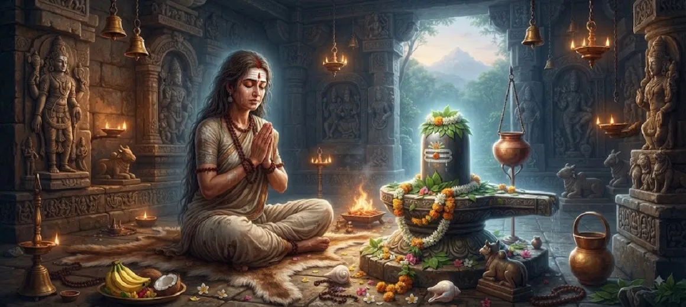

The Story of the Devoted Brahmin Lady
The fifth chapter of the Kotirudra Samhita presents the touching and spiritually uplifting account of a pious brahmin lady whose unwavering devotion to Lord Shiva illuminated her entire life.
Through her righteous conduct, sincere daily worship, and steadfast faith amidst life's trials, she exemplifies how pure devotion attracts the supreme grace of Mahadeva.
Her inspiring journey serves as a beacon for all spiritual seekers, proving that the Lord looks only at the purity of the heart rather than external grandeur.
Chapter 5 Highlights
Unwavering Devotion
The brahmin lady maintains absolute faith in Lord Shiva through all circumstances.
Righteous Conduct
Her life is firmly rooted in moral integrity, purity, and dharmic duties.
Sincere Daily Worship
She dedicates her time and energy to heartfelt rituals and prayers to Mahadeva.
Purity of Heart
Her humble heart shines with unconditional love and surrender to the Divine.
Divine Grace
Lord Shiva responds to her genuine devotion by bestowing supreme blessings.
Spiritual Elevation
Her story inspires devotees to cultivate steadfast faith in their own spiritual path.
Core Topics in This Chapter
Introduction of the Pious Brahmin Lady
Chapter 5 introduces a remarkable brahmin lady whose life stands as a testament to the power of unpretentious, heartfelt devotion to Lord Shiva.
Though living a simple household life, her mind was perpetually anchored in spiritual contemplation and the service of her lord.
Her Virtuous Nature and Righteous Life
The narrative highlights her adherence to dharma, truthfulness, hospitality, and profound respect for spiritual principles and holy personages.
She practiced kindness toward all living beings, reflecting the true essence of spiritual teachings in her daily conduct and domestic interactions.
Dedication to Daily Shiva Worship
Regardless of domestic duties or external hardships, she never missed her daily worship of Lord Shiva, offering prayers with pure water, bilva leaves, and total devotion.
Her altar was a sanctuary of peace where her heart poured out in silent, loving communion with Mahadeva.
Steadfastness Amidst Life Trials
Like all mortals, she faced worldly trials and tribulations, yet her faith remained unshaken, viewing every challenge as an opportunity to surrender deeper to God.
This steadfast endurance formed the core of her spiritual strength, proving that true faith shines brightest in times of difficulty.
The Outpouring of Divine Grace
Moved by her sincere, selfless, and uninterrupted devotion, Lord Shiva manifested His grace, bestowing upon her spiritual fulfillment and ultimate liberation.
Her life became a shining example in the Puranas of how ordinary householders can attain the highest spiritual states through unswerving dedication.
Spiritual Lessons from Her Life
The chapter emphasizes that spiritual success is not reserved solely for ascetics living in remote forests; sincere devotion practiced at home is equally potent.
Purity of intention, consistency in prayer, and moral righteousness are shown to be the true keys to winning the favor of Mahadeva.
Transition to Chapter 6
Concluding the account of the devoted brahmin lady, the text smoothly transitions into Chapter 6, which elaborates on the attainment of heaven through the grace of Shiva.
Readers are thus guided further along the profound teachings of the Kotirudra Samhita regarding divine rewards and liberation.
Key Teachings of Chapter 5
Power of Householder Devotion
Spiritual greatness can be achieved by anyone living righteously in the world.
Consistency in Worship
Regular, sincere prayer builds an unbreakable link with the Divine.
Faith Through Trials
Enduring hardships with faith purifies the soul and strengthens devotion.
Purity Over Grandeur
Mahadeva values the pure love of the heart far above ritualistic extravagance.
Certainty of Grace
Unfailing devotion invariably attracts the compassionate blessings of Shiva.
Inspirational Legacy
The tales of pure devotees guide future generations on the righteous path.
Spiritual Reflection
The story of the devoted brahmin lady reminds us that divine grace is not restricted to sages in deep forests or great kings performing grand sacrifices. It flows freely toward any heart filled with sincere love, moral integrity, and unwavering faith in Lord Shiva. By maintaining devotion amidst daily responsibilities, we turn our ordinary lives into sacred offerings.
Living the Message of Chapter 5
Establish a consistent daily routine of prayer and remembrance of Lord Shiva, no matter how busy or demanding your household duties may be.
Approach challenges with patience and faith, trusting that sincere devotion provides the inner strength needed to overcome any obstacle.
Cultivate moral integrity and kindness in all your daily interactions, honoring the presence of the Divine in every living being.
Key Spiritual Concepts
Devotion practiced successfully within the duties and context of household life.
Steadfast dedication, firmness, and unwavering commitment to spiritual practice.
Exclusive, single-minded devotion directed solely toward Lord Shiva.
Righteous conduct, moral duty, and living in harmony with cosmic law.
Deep reverence, faith, and trust in the words of scriptures and the Divine.
The spiritual reward and divine fruit attained through pure worship.
Chapter Summary
Kotirudra Samhita Chapter 5 narrates the inspiring story of a pious brahmin lady who exemplified supreme devotion, moral righteousness, and unwavering faith in Lord Shiva while living a householder's life. Despite facing life's trials, her commitment to daily worship never wavered, drawing down the compassionate grace of Mahadeva and securing her spiritual fulfillment. This touching account reinforces the truth that sincere devotion transcends social status, preparing the reader for Chapter 6 on attaining heaven through Shiva's grace.
Frequently Asked Questions
1. What is the main subject of Kotirudra Samhita Chapter 5?
Chapter 5 details the inspiring story of a devoted brahmin lady whose unwavering faith, righteous conduct, and deep devotion to Lord Shiva earned her supreme grace.
2. Who is the central figure of this chapter?
The central figure is a pious brahmin lady who exemplifies absolute dedication, purity, and steadfast worship of Mahadeva despite life's trials.
3. What core virtues does the brahmin lady demonstrate?
She demonstrates patience, unyielding faith, sincerity in daily worship, righteousness, and complete surrender to Lord Shiva.
4. How does Lord Shiva respond to her devotion?
Lord Shiva responds with immense compassion, showering His divine grace and ensuring her spiritual elevation.
5. How does this chapter connect to the surrounding chapters?
Chapter 5 follows the manifestation of Atrishvara from Chapter 4 and directly precedes Chapter 6, which discusses the attainment of heaven through Shiva's grace.
6. What is the primary lesson of this chapter?
The chapter teaches that true devotion does not depend on grand status; sincere, pure-hearted worship of Shiva brings supreme divine blessings to anyone.
“Through pure devotion and unwavering faith, the pious brahmin lady proved that the grace of Mahadeva is accessible to every sincere heart.”
Continue Through Kotirudra Samhita
Chapter 5 explores the story of the devoted brahmin lady. Continue to Chapter 6, Attainment of Heaven Through Shiva's Grace.